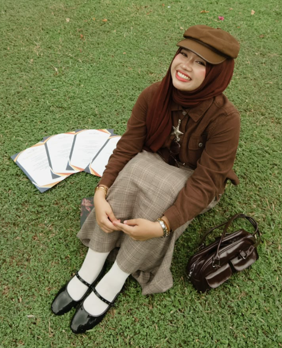

Programming & databases
I’ve also used Kotlin and Firebase in academic projects.
welcome to my portfolio
Diploma in Information Technology
I’m looking for a software development internship.
Here are some projects I’ve worked on during my studies.

hello, I’m Arissa! ♡01 / ABOUT ME
I’m Nur Arissa Binti Mohamad Hanapi, a Diploma in Information Technology student at Politeknik Sultan Idris Shah, specializing in Software & Application Development.
I’ve used PHP, MySQL, Java, Kotlin, and Firebase in my academic projects. These projects have given me practice in building websites, working with databases, and testing my code.
What I’m looking for
I’d like to gain experience working on software projects
outside the classroom. During my internship, I hope to
improve my programming skills, learn from the team,
and help with development work.
02 / EDUCATION
Politeknik Sultan Idris Shah
Specialization in Software & Application Development.
Computer Science · Accounting · Home Science
03 / SKILLS
I’ve also used Kotlin and Firebase in academic projects.
Languages: Malay (Native) English (Intermediate)
04 / PROJECTS
Projects from my diploma
and school coursework.
FINAL YEAR DIPLOMA PROJECT · JUL — OCT 2026
Smart Student Attendance Monitoring System
For my final year project, I built a web-based system to record student attendance, track late check-ins, and generate reports.
I developed this project at Politeknik Sultan Idris Shah.
SCHOOL COURSEWORK PROJECT
Sunglasses Catalog Management System
I built this catalog for my school coursework. Users can browse sunglasses and product details, while an administrator manages the listings.
I developed this as coursework at Sekolah Menengah Kebangsaan Taman Kosas.
05 / EXPERIENCE
I worked at Veesee Collections before starting my diploma.
06 / ACHIEVEMENTS & VOLUNTEERING
ACADEMIC ACHIEVEMENT
I’ve achieved the Dean’s List every semester.
VOLUNTEERING
I volunteered in a CSR programme at Pantai Bumi Hijau under Politeknik Sultan Idris Shah.
07 / CONTACT
If you have a software development internship opening,
you can contact me by email. My CV is available below.